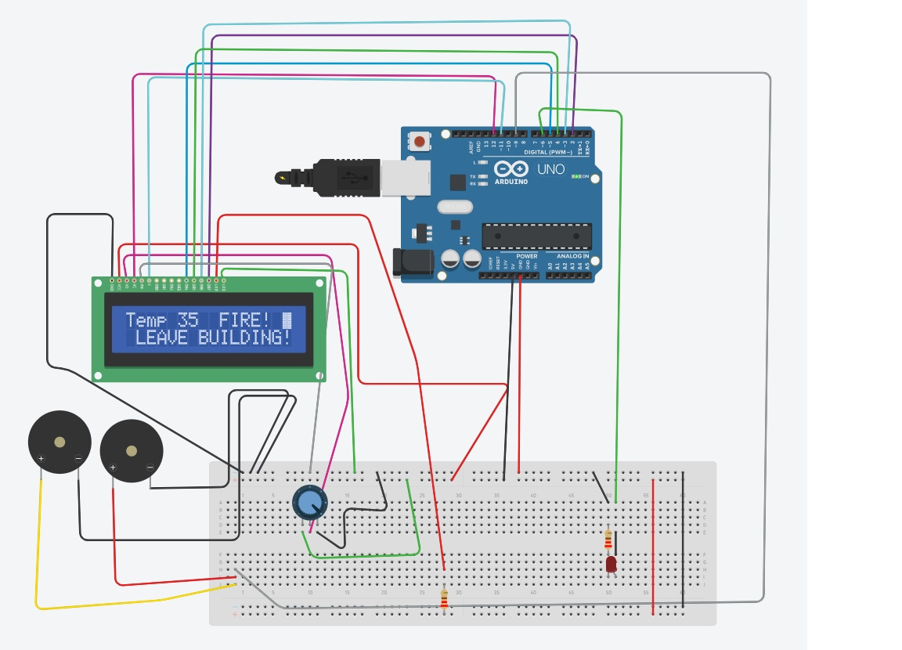
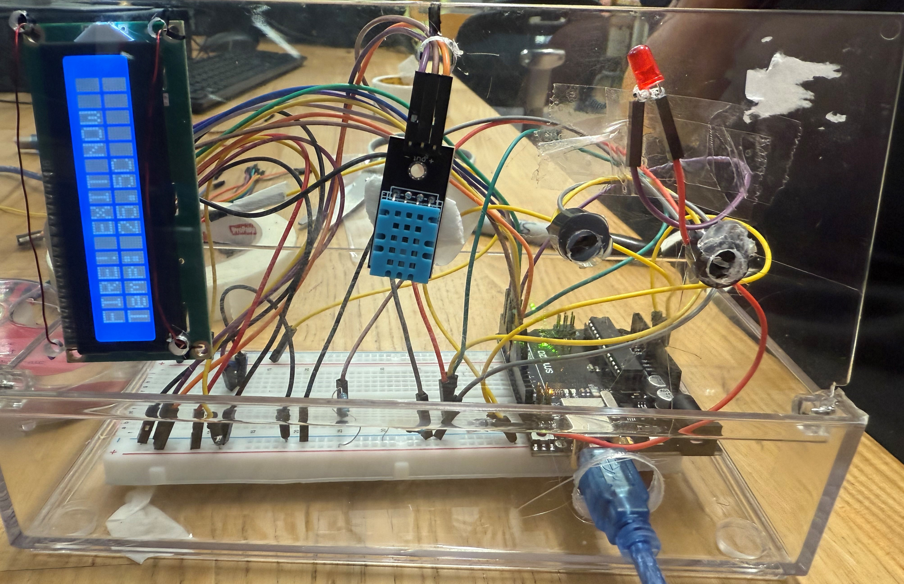

Course: TECH 117 (Computer Engineering Technology, Fall 2025)
Team Members:
This project uses an Arduino Uno, a DHT11 temperature sensor, a buzzer, RGB LEDs, and an LCD screen to provide fire alerts. When the temperature reaches a preset range, all alarm systems engage simultaneously: the buzzer sounds to alert those who are not hearing impaired, the RGB LEDs flash to visually warn the hearing impaired, and the LCD screen displays the current temperature along with the message Fire! Exit Now. This ensures comprehensive safety by combining auditory and visual signals.
The ultrasonic sensor measures distance; the Arduino activates LEDs and the buzzer according to distance thresholds.
| Item Description | Qty | Specification | Estimated Cost(CA) | Supplier/Part Number |
|---|---|---|---|---|
| Arduino Uno compatible with | 1 | 5v microcontroller board | $22.00 | A000073 |
| Temperature & Humidity Sens | 1 | Digital temp/humidity sensor, 3-5v | $5.00 | DHT11 |
| Resistor for LED | 1 | 220 or 330 ohm | $0.16 | CF1/4CT52R221J |
| LED RED | 1-2 | 5 mm LED - 2v forward drop | $0.24 | 151051RS11000 |
| Breadboard | 1 | 400 tiepoints | $15.56 | CN0241 |
| Buzzers | 2 | Small 5v piezo buzzers | $4.58 | PB-0940PW-03Q |
| lcd display | 1 | 5v LCD, I2C module | $11.44 | LCD DISPLAY 16X2 & BL |
| 8 | 20 male to male | $7.75 | ZW-MM-20 | |
| potentiometer | 1 | 10k ohm linear pot | $3.00 | 601030 |
| Plastick box | 1 | --------------------------------------------- | free | |
| Computer | --------------------------------------------- | |||
| jumper wires | 25 | male to female | $7.75 | ZW-MF-20 |
| TOTAL | $77.48 |
The following image shows the assembled prototype on a breadboard.
The following Arduino code controls the system, lighting LEDs and activating the buzzer based on distance readings from the HC-SR04 sensor.
// Collision Warning System with Distance Sensor (HC-SR04)
// Author: Ana Rodrigues
// Oct 2, 2025
// Object is farther than 50cm: Green LED lights up
// Object is closer than 50 cm, but more than 10cm away: Yellow LED lights, buzzer plays 300Hz tone
// Object is closer than 10cm: Red LED lights up, buzzer plays 500Hz tone
//LED pins
const int greenLED = 2;
const int yellowLED = 3;
const int redLED = 4;
// Ultrasonic sensor pins
const int trigPin = 9;
const int echoPin = 10;
// Passive buzzer pin
const int buzzer = 11;
void setup() {
pinMode(greenLED, OUTPUT);
pinMode(yellowLED, OUTPUT);
pinMode(redLED, OUTPUT);
pinMode(trigPin, OUTPUT);
pinMode(echoPin, INPUT);
Serial.begin(9600);
}
void loop() {
// Measure distance
digitalWrite(trigPin, LOW);
delayMicroseconds(2);
digitalWrite(trigPin, HIGH);
delayMicroseconds(10);
digitalWrite(trigPin, LOW);
long duration = pulseIn(echoPin, HIGH);
long distance = duration * 0.034 / 2;
Serial.print("Distance: ");
Serial.print(distance);
Serial.println(" cm");
//Error in measurement:
if (distance <= 0)
return;
//Too close:
if (distance <= 10) {
digitalWrite(greenLED, LOW);
digitalWrite(yellowLED, LOW);
digitalWrite(redLED, HIGH);
tone(buzzer, 500); // Play 500Hz tone
return;
}
//Midrange:
if (distance <= 30) {
digitalWrite(greenLED, LOW);
digitalWrite(yellowLED, HIGH);
digitalWrite(redLED, LOW);
tone(buzzer, 300); // Play 300Hz tone
return;
}
//Normal status:
digitalWrite(greenLED, HIGH);
digitalWrite(yellowLED, LOW);
digitalWrite(redLED, LOW);
noTone(buzzer); // stop buzzer
delay(100);
}
The fire alarm circuit project demonstrates a balanced approach to safety and sustainability. By utilizing RoHS- and WEEE-compliant components, the design minimizes hazardous material use. Its low energy demand—less than 1 W even under alarm conditions—makes it suitable for efficient power sources such as USB or solar. The modular nature of the system ensures components can be reused, extending their lifecycle and reducing electronic waste. With thoughtful sourcing and consolidated shipping, the project further reduces its carbon footprint. Overall, the fire alarm circuit provides essential safety functionality while aligning with environmentally responsible practices, making it a model for small-scale, eco-conscious electronic design.
The following external resources and example projects demonstrate related Arduino applications using fire alarms, smoke detection, temperature and humidity monitoring, and buzzers: